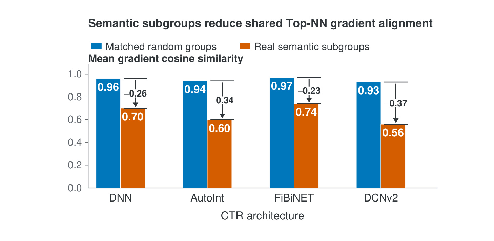
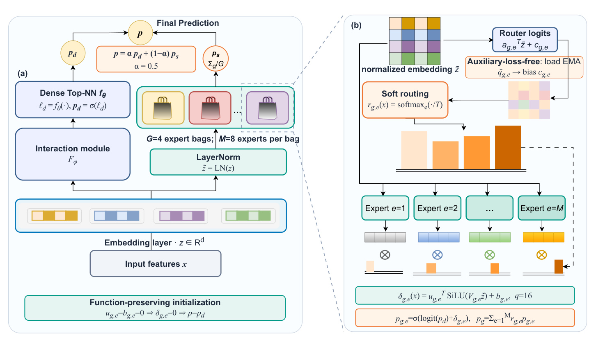
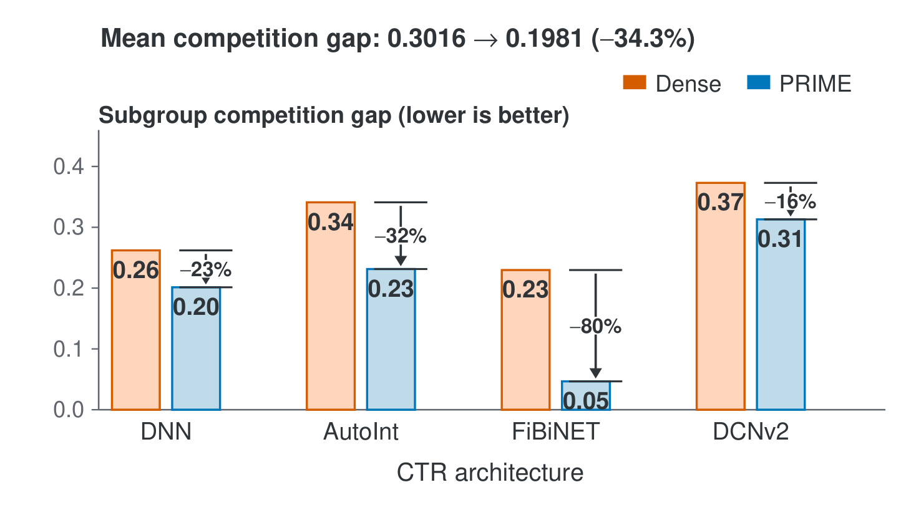
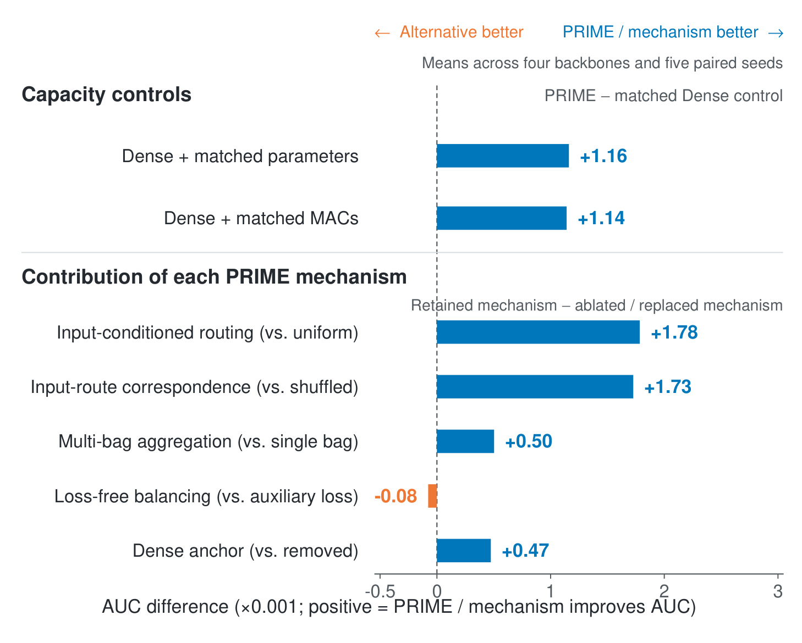
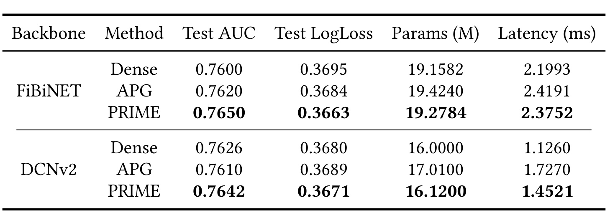
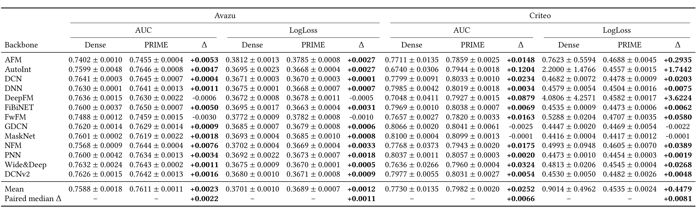
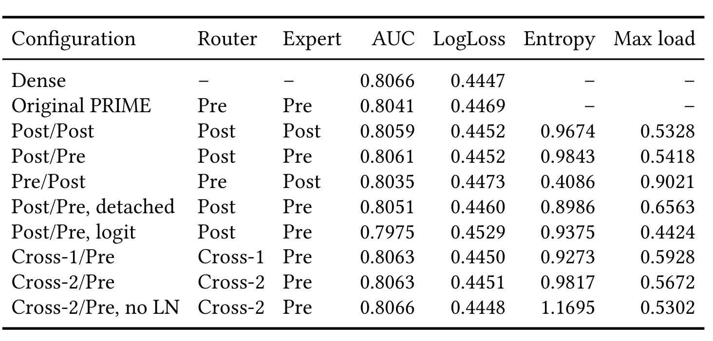
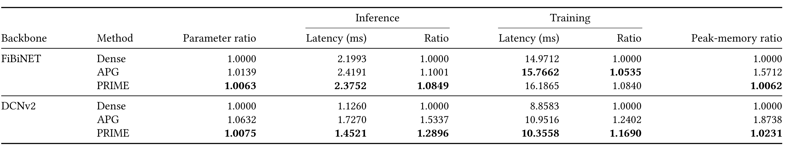

PRIME：用即插即用残差条件专家缓解 CTR 顶层网络的子群优化竞争
PRIME 的英文全名是 PRIME: Mitigating Subgroup Optimization Competition in Shared CTR Top Networks with Plug-in Residual Input-Conditioned Mixture of Expert。论文于 2026 年 8 月 31 日公开，第一作者 Heng Yao 的主机构为蚂蚁集团，合作作者来自河南理工大学、阿里巴巴等机构。本文的唯一论文入口是 arXiv:2608.30449，作者公开了 PRIME 实现。它不再设计一种特征交互器，而是追问不同 CTR 骨干共用的最后决策 MLP 是否把异质样本的更新压进了同一组参数，并给出一个不改变启动函数的条件残差改造。
异质的用户、广告与上下文子群同时更新一套共享 Top-NN 参数，当它们的梯度方向弱对齐时，聚合梯度只能在冲突目标之间折中；单纯加宽 MLP 并不改变所有样本共用参数的约束。
1. 背景和问题
1.1 特征交互很多样，最后决策却仍是全共享
一个典型的 CTR 模型由稀疏特征嵌入、特征交互模块与顶层预测网络组成。DCN 系列显式构造特征交叉，AutoInt 用自注意力建模 field 关系，FiBiNET 引入双线性交互，MaskNet 做样本级特征调制。这些骨干的归纳偏置不同，却往往都把交互后表征交给一个对所有样本共享的 MLP。论文把这段共享决策路径称为 Top-NN。共享能聚合数据、保持参数效率，却默认站点、应用、设备、时段等语义子群应沿着相容方向更新同一组后层参数。
这个假设对 CTR 尤其关键：每个样本通常只有一个二元点击标签，预测概率同时影响排序区分性与校准，还会进入流量分配、广告拍卖和后续价值估计。移动与桌面流量、站内与 Web 流量可能依赖不同特征组合；若它们在 Top-NN 中提出不相容梯度，一个对某子群有利的全局更新就可能对另一子群无效甚至有害。加宽 MLP 只增加每个样本都会激活的单元，没有让不同样本选择不同参数方向。因此本文区分的是“有多少容量”与“容量如何按输入组织”。这一点也解释了为什么作者没有直接把 MoE 当作更大模型：如果没有匹配容量和计算的对照，AUC 提升无法证明来自条件分工。
已有条件参数化路线也不能直接回答这个问题。MMoE、PLE 处理有显式任务边界的多任务负迁移，STAR、PEPNet、MLoRA 等通常依赖场景或领域先验，APG 则动态生成低秩参数；PRIME 面对的是单任务、单标签空间内没有显式子群标签的异质样本。它要求新增模块既保护一个已经可靠的 Dense 函数，又能按输入选择局部修正，还不能复制完整交互模块或 Top-NN。由此，问题从“再造一个专家网络”收窄为“在共享决策映射周围组织受预算控制的条件残差”。
1.2 语义子群竞争如何被诊断
作者先在 Avazu 上训练 Dense 基线，然后冻结模型，分别用 site_category、app_category、device_type 和 hour 构造语义子群。每个群被分成 8 个不重叠 block，每块 256 个正样本与 256 个负样本，一个 field 合计 4096 个样本。对照不是随意乱分，而是通过 2000 次随机排列生成与语义组拥有相同样本数和正标签比例的匹配随机组。研究者只计算共享 Top-NN 所有可训练权重的无正则 BCE 梯度，把梯度拉平后求组间余弦相似度。这样就把“语义异质性”与“小组大小或点击率不同”分开。

Figure 1 中蓝柱是匹配随机组，橙柱是真实语义子群。DNN 的平均梯度余弦相似度从 0.96 降到 0.70，AutoInt 从 0.94 降到 0.60，FiBiNET 从 0.97 降到 0.74，DCNv2 从 0.93 降到 0.56，差值分别为 0.26、0.34、0.23 和 0.37。四种交互架构都呈现同一方向，说明语义分组带来的额外不对齐不依赖某一特定骨干。由于随机组同时匹配规模与标签比例，柱间差也不能用“少数群梯度更噪”或“正负样本不平衡”轻易解释。
不过这仍是梯度关联诊断，而非子群真实因果分解：四个 field 可能彼此相关，余弦相似度也只描述当前 checkpoint 附近的一阶几何。本文的优点是没有在这里停下，而是继续用容量匹配、路由打乱和训练后竞争间隙等实验检查该诊断是否与 PRIME 的改善方向一致。换句话说，Figure 1 提供的是可被后续实验反驳的动机；如果普通等容量残差就能复制全部效果，或打乱输入与专家的对应而不掉点，那么“子群竞争需要条件参数组织”的解释就站不住。
2. 方法
2.1 从共享优化折中到条件残差
设输入为 (x)，嵌入层将稀疏 field 展平为 (z)，原始 CTR 骨干的交互参数和共享 Top-NN 参数分别记为 (\phi) 与 (\theta)。无论骨干是否带并行浅层 logit，(B_{\phi,\theta}) 都包含其完整原始预测路径：
符号解释：(E_\omega) 是参数为 (\omega) 的嵌入层，(\operatorname{vec}) 表示展平，(B_{\phi,\theta}) 是完整骨干，(\ell_d) 是 Dense logit，(\sigma) 是 sigmoid，(p_d) 是锚定点击概率。PRIME 不替换这条路径，而是从其嵌入表征和完整输出取信号。
符号解释：(\pi_k) 是子群 (k) 的概率质量，(\mathcal L_k) 是其损失，(g_k=\nabla_\theta\mathcal L_k) 是它对 Top-NN 的梯度，(g) 是所有子群共同决定的实际更新方向。对一步 (\theta'=\theta-\eta g) 做一阶展开：
符号解释：(\eta) 是学习率，(\lVert g_k\rVert_2) 是子群梯度的二范数，(\pi_j) 是其他子群权重，(\cos(g_k,g_j)) 衡量两组更新方向的对齐。相似度越低，其他子群对 (k) 的有效下降贡献越小；若变为负值，聚合更新甚至会推高该子群损失。PRIME 的目标不是拆掉共享函数，而是在保留统计共性的前提下，给每个输入提供可选的局部修正方向。
符号解释：(A_\psi) 是新增条件适配器，(\psi_0) 是初始参数，(z) 是样本表征，(p_d) 是原始 Dense 概率，(\forall z) 要求函数等价对所有输入成立，而不只是均值近似。子群标签在推理时不可得，因此理想子群偏差改写为输入决定的专家组合：
符号解释：(\Delta(x)) 是样本相对 Dense logit 的条件偏差，(r_e(x)) 是样本对专家 (e) 的路由权重，(\delta_e(x)) 是该专家的标量 logit 修正。语义子群只用于训练后诊断，不监督 router；路由学习潜在分工，而不是复制四个人工 field 分组。

Figure 2 把两条路径分得很清楚。左侧原始骨干从 (x) 经嵌入、交互模块和 Dense Top-NN 产生 (p_d)；新分支只取展平嵌入 (z)，经无仿射 LayerNorm 后同时喂给路由和低秩专家。默认 32 个专家被分成 4 个 bag，每个 bag 有 8 个专家；路由不做 Top-k 截断，而是对 bag 内所有专家软加权。每个专家只在 Dense logit 上施加 rank-16 标量残差，四个 bag 的概率平均为 (p_s)，再以 (\alpha=0.5) 与 (p_d) 混合。图底部的零残差初始化使所有专家刚挂载时都输出 0，所以随机 router 不会破坏已验证的基线预测。右上角 EMA 只通过偏置调整后续批次路由负载，不向 CTR 目标注入额外平衡梯度。
2.2 低秩残差专家与零残差初始化
对无仿射 LayerNorm 后的 (\tilde z\in\mathbb R^d)，第 (g) 个 bag 里的第 (e) 个专家输出：
符号解释：(V_{g,e}\in\mathbb R^{q\times d}) 把 (d) 维输入投影到 (q) 维子空间，(u_{g,e}\in\mathbb R^q) 把 SiLU 非线性响应压成一个 logit 修正，(b_{g,e}) 是标量偏置，(q\ll d) 是低秩瓶颈。不同 (V_{g,e}) 表示不同低维修正方向，router 按输入组合这些方向；专家没有复制骨干交互模块，也没有生成完整 Top-NN。
训练开始时把 (u_{g,e}) 和 (b_{g,e}) 置零，即使投影矩阵和 router 已随机指向不同方向，新分支仍不改变预测。随后输出投影先从零长出可用修正，router 才能根据已成形的专家能力建立分工，减少未训练专家在早期主导结果的风险。低秩并不等于无条件的小容量残差；真正要由实验检验的是，相同参数或 MAC 下的输入-专家对应是否仍有额外价值。 这也是论文设置等预算 Dense 残差、均匀路由和跨样本打乱路由三类对照的原因。
2.3 输入条件路由、多 bag 聚合与 Dense 概率锚
符号解释：(a_{g,e}) 是 router 对专家 (e) 的线性向量，(c_{g,e}) 是可被负载规则更新的偏置，(T) 是温度，(M) 是每 bag 专家数，(j) 是 softmax 归一化索引。主实验用 (T=1)、(M=8)。每个专家在 (\operatorname{logit}(p_d)) 上加自己的 (\delta_{g,e})，经 sigmoid 回到概率域；bag 内预测是这些专家概率的条件期望。把路由权重在样本间打乱可保留总负载，却破坏输入-专家对应，是验证条件性的直接干预。
符号解释：(G) 是 bag 数，(p_g(x)) 是第 (g) 个 bag 对样本的软路由预测，(p_s(x)) 是 bag 平均。论文将其理解为相关估计器的输出平滑，而不假设各 bag 独立；它们共享骨干并联合训练，所以“方差下降”只是设计直觉，仍要靠单 bag 消融确认。最终输出是：
符号解释：(p(x)) 是最终点击概率，(\alpha) 是 Dense 锚定权重，(1-\alpha) 是条件专家分支权重，主设置取 (\alpha=0.5)。概率域凸组合使 Dense 路径在训练和推理期间始终存在；由于初始时所有残差为零，各专家概率、bag 概率、(p_s) 与 (p) 都精确等于 (p_d)。这项等价性不依赖调参，是结构与初始化的直接结果。训练阶段 router、专家和原骨干一同反向传播；推理阶段仍计算两路，但不再更新参数。
2.4 无辅助损失的负载调整与即插即用成本
PRIME 不把平衡损失加到 BCE，而记录每个 bag 内专家的批次平均路由权重，再做 EMA：
符号解释：(\hat q_{g,e}^{(t)}=B^{-1}\sum_{i=1}^{B}r_{g,e}(x_i)) 是第 (t) 个 batch 的平均路由负载，(B) 是批大小，(\bar q_{g,e}^{(t)}) 是平滑负载，(\mu=0.99) 是移动平均系数。负载误差不进入反传，而改动下一批次的 router bias：
符号解释：(c_{g,e}^{(t)}) 是当前路由偏置，(\eta_b=10^{-3}) 是纠偏步长，(1/M) 是均匀目标，求和项去掉 bag 内共同偏移，(\operatorname{clip}) 把中心化偏置限制在 ([-c_{\max},c_{\max}])，本文 (c_{\max}=2)。第一式使过载专家在后续 batch 稍微失势，第二式防止所有 bias 一起漂移并约束幅度。训练的可微目标仍是 BCE 加 L2；推理使用已经学好的 router 与 bias，不执行主机侧路由诊断、Gram 矩阵或平衡更新。
若总专家数为 (E=GM)，每专家 rank 为 (q)，新增参数数量为：
符号解释：(Ed) 来自各专家 router 向量，(Eqd) 来自低秩投影 (V)，(Eq) 来自输出向量 (u)，(E) 是残差偏置数，(d) 是展平嵌入维度。附加 MAC 为 (Ed+Eq(d+1))，两者均由 (q) 线性控制，避免复制完整 Top-NN。工程上，插件通过 hook 获得 (z)，原始特征处理、交互模块、Top-NN、训练入口与记录格式不变，但开启插件后必须重建 optimizer，确保新增参数进入同一个端到端优化过程。
3. 实验结果
3.1 数据、骨干和评估协议
数据采用公开 FuxiCTR/BARS-CTR 处理流程。Avazu 有 22 个 field，训练、验证、测试分别为 2830 万、404 万和 809 万样本；Criteo 有 39 个 field，三个切分为 3667 万、458 万和 458 万。评估覆盖 AFM、AutoInt、DCN、DNN、DeepFM、FiBiNET、FwFM、GDCN、MaskNet、NFM、PNN、Wide&Deep 和 DCNv2 共 13 种架构。每个 Dense/PRIME 对共享数据切分、预处理、骨干配置与随机种子，用验证 AUC 选 checkpoint，之后才在原封不动的测试集上评估五个配对种子。
主实验的 Adam 学习率为 (10^{-3})，batch size 为 4096，嵌入维度为 10，最多训练 100 epoch，连续两次验证不改善则早停并恢复最佳 checkpoint。冻结的 PRIME 配置是 (G=4)、(M=8)、(q=16)、(\alpha=0.5)、(T=1)、(\mu=0.99)、(\eta_b=10^{-3}) 和 (c_{\max}=2)。作者明确保留已经完成的不利 run，只在异常退出或没有有效记录时重启，这一点对后面理解 Criteo 的失稳基线很重要。实验依次回答问题诊断、机制关联、容量与条件性、组件和效率、跨架构有效性五个研究问题，没有在看到最终测试结果后继续修改配置。
3.2 竞争间隙是否在 PRIME 训练后缩小
论文把 field (f) 上匹配随机组的平均梯度相似度减去语义组相似度，定义为竞争间隙 (\Gamma_f=A_f^{\mathrm{rand}}-A_f^{\mathrm{sem}})；越大表示语义分组带来的额外梯度异质性越强。同样的四架构、三个 checkpoint、四个 field 和样本在 Dense 与 PRIME 中配对，平均间隙从 0.3016 降至 0.1981，相对缩小 34.3%。一个参数匹配、同样零残差初始化与概率锚定但没有 router 的普通 Dense 残差能将间隙降到 0.2246。这说明残差容量本身缓解了 0.0770，条件参数组织在同预算下又额外缩小 0.0265；证据不支持把全部改善简化为“多了一层”。

Figure 3 展示的不只是 34.3% 总降幅，还暴露架构间差异：DNN 从 0.26 降至 0.20，AutoInt 从 0.34 降至 0.23，FiBiNET 从 0.23 大幅降至 0.05，DCNv2 则仅从 0.37 降到 0.31，对应降幅 23%、32%、80% 和 16%。这些值支持“PRIME 更对准原本冲突的语义更新”，却不意味着所有骨干的冲突都会被同程度消除。尤其 DCNv2 的间隙仍为 0.31，后续却有正向 AUC，说明梯度 gap 是机制关联量而不是性能的单调预测器。作者还报告语义子群的梯度对齐改善超过匹配随机组，使间隙缩小不太像两类组的相似度一起整体抬升的副产品。更稳妥的结论是：PRIME 改变了共享更新的兼容性，但不同骨干对这种改变的敏感度并不一致。
3.3 容量匹配与机制层级
在 Avazu 的 DNN、AutoInt、FiBiNET 和 DCNv2 上，参数匹配和激活 MAC 匹配的无条件 Dense 残差相对原始 Dense 分别提升平均 AUC 0.0019 与 0.0020，但仍比 PRIME 低 0.0012 与 0.0011。这两个对照保留零残差初始化和 Dense 概率锚，只去掉输入条件分配，所以比“PRIME 参数更多”的粗糙说法更有区分力。然后论文逐项破坏路由对应、多 bag、负载策略和 Dense 锚，使主张能被分解检验。

Figure 4 的横轴单位是 (10^{-3}) AUC，正值始终表示 PRIME 或被保留机制更好。PRIME 相对参数匹配、MAC 匹配对照为 +1.16 和 +1.14；把 router 改为均匀权重会损失 0.00178 AUC，在样本间打乱路由权重会损失 0.00173。前者去掉条件分配，后者保留各专家总负载却切断输入-专家对应，两者出现相近的明显回落，是条件特化最强的证据。单 bag 对照损失 0.00050，去掉 Dense 锚损失 0.00047，贡献更小但仍为正。“无辅助损失”相对显式平衡损失是 -0.00008，几乎持平且略差；它的价值并非直接抬高 AUC，而是在不引入第二个损失系数的前提下获得相当精度。由此可以把设计分成核心与辅助：函数保持、输入条件组织和受控低秩容量构成核心，多 bag 与 EMA 偏置提供较小的平滑和运维便利。
3.4 与 APG 的公平比较
APG 是接近的输入条件参数生成方法。本文使用官方 FuxiCTR 实现，在 FiBiNET 上将 APG 放在双线性交互前，在 DCNv2 上使用 self-wise 动态参数生成；数据分割、嵌入维度、隐藏层、optimizer、batch size、早停与配对种子均一致，APG 专用超参在验证集选择。PRIME 在 FiBiNET 和 DCNv2 上相对 APG 的五种子平均 AUC 分别提升 0.0030 和 0.0032，共十个种子级对比全部同向；其中最小差值是 FiBiNET、seed 190034 上的 +0.0002，说明“全胜”中也包含很接近的 run，不宜只报胜负数。

Table 1 显示，FiBiNET 的 Dense/APG/PRIME AUC 为 0.7600/0.7620/0.7650，LogLoss 为 0.3695/0.3684/0.3663；PRIME 参数 19.2784M，少于 APG 的 19.4240M，单个 4096 样本批的推理延迟 2.3752ms，也低于 APG 的 2.4191ms。DCNv2 上对应 AUC 为 0.7626/0.7610/0.7642，PRIME 在 APG 低于 Dense 的情形下仍取得最佳值；其 16.1200M 参数与 1.4521ms 延迟明显低于 APG 的 17.0100M 和 1.7270ms，但高于 Dense 的 16.0000M 和 1.1260ms。该表支持“相对 APG 更紧凑”，不支持“相对 Dense 没有延迟成本”；尤其 DCNv2 上 PRIME 推理延迟仍增加约 29%。此外 APG 的位置随骨干变化，比较说明的是两套已调优条件参数化在特定挂接方式下的结果，而非所有 APG 变体的理论上限。
3.5 跨 13 种架构的冻结测试
在验证集冻结 PRIME 配置后，Avazu 的架构宏平均 AUC 从 0.7588 增至 0.7611，LogLoss 从 0.3701 降至 0.3689；65 个架构-种子对的中位改善为 +0.0022 AUC 和 +0.0011 LogLoss。横跨种子的 AUC 标准差平均从 0.0018 降到 0.0011，LogLoss 从 0.0010 降到 0.0007。Criteo 的配对中位改善为 +0.0066 AUC 和 +0.0081 LogLoss；每个数据集上都有 11/13 个架构的平均 AUC 提升。这些中位数和胜出架构数，比 Criteo 的宏平均更适合描述广度。

Table 2 需要分三层读。第一层是多数正常基线上的小而稳定改善，如 Avazu DNN +0.0011、DCNv2 +0.0016，Criteo DNN +0.0034、FiBiNET +0.0069。论文引用 BARS-CTR 将约 0.001 绝对 AUC 作为生产系统中常见的实用幅度经验线，但这不是统计显著性阈值，也不能替代业务收益评估。第二层是明确负例：Avazu DeepFM -0.0006、Avazu FwFM -0.0030、Criteo GDCN -0.0025，说明插件并非所有交互结构都稳定获益。第三层是 Criteo AutoInt 和 DeepFM 的 Dense 严重优化失稳：AutoInt AUC 从 0.6740 恢复到 0.7944，DeepFM 从 0.7048 恢复到 0.7927，两者 Dense LogLoss 甚至达 2.2000 和 4.0806。它们把 Criteo 宏平均差值拉到 +0.0252 AUC 和 +0.4479 LogLoss，不应解释为普遍架构的常规改善尺度。作者没有删除这些 run，保持了协议一致性；读者则应把“恢复失败基线”与“在稳定基线上增益”分开。
3.6 负例与架构感知的挂接边界
FwFM 没有论文所针对的共享 MLP Top-NN，它从线性项和 field-weighted 二阶项产生预测。PRIME 在这里更像额外条件预测器：Criteo 上 +0.0163 AUC，Avazu 上却 -0.0030，缺乏与被诊断共享映射的结构对齐。GDCN 暴露另一种错位：其决策依赖门控 cross 后表征，默认 PRIME router 却只看 pre-cross 嵌入。若子群区分性在交叉层后才出现，router 在竞争方向变得可见之前就已分配专家，它学到的相关性便未必服务最终决策冲突。

Table S3 通过保持容量不变来定位问题。原始 Pre/Pre PRIME 只有 0.8041 AUC，低于 Dense 0.8066；将 router 改为 Post、expert 仍取 Pre 的 Post/Pre 达 0.8061，略高于 Post/Post 的 0.8059，说明 router 必须看到决策相关信号，但 router 与 expert 输入无须完全相同。反向的 Pre/Post 只有 0.8035，其路由熵 0.4086、最大专家负载 0.9021，比 Post/Pre 的 0.9843 和 0.5418 更接近单专家垄断。切断 Post/Pre router 梯度后 AUC 降至 0.8051，说明路由表征要跟任务一起学习；用无界直接 logit 残差则降至 0.7975，支持 Dense 概率锚和有界混合的稳定作用。Cross-1/Pre 与 Cross-2/Pre 均为 0.8063，Cross-2/Pre 去 LayerNorm 可达 0.8066，但它们只恢复到 Dense 附近，并没有把原始负例转成明显胜利。因此附录支持“挂接位置是失败原因之一”，尚不足以声称 GDCN 问题已完全解决。
3.7 端到端效率与复现约束
性能剖析在同一加速器上用 batch size 4096，预热 20 步，推理计时 100 步、训练计时 50 步，独立重复 3 次取中位数。训练步包含前向、反向和 optimizer 更新，推理使用 eval 模式且不记录梯度。软 router 会评估每个 bag 里所有低秩专家，因此当前实现不能享受稀疏 Top-k 调度的计算节省；稀疏调度与算子融合只是未来优化方向。

Table S4 把“参数轻量”与“计算免费”区分开。FiBiNET 上 PRIME 只增加 0.63% 参数，推理、训练步延迟比分别为 1.0849 和 1.0840，峰值显存比 1.0062；APG 的推理比 1.1001、训练比 1.0535、显存比 1.5712。这里 PRIME 推理与显存更好，但 APG 训练步快约 2.6%。DCNv2 上 PRIME 参数比 1.0075、推理比 1.2896、训练比 1.1690、显存比 1.0231，而 APG 对应为 1.0632、1.5337、1.2402 和 1.8738；PRIME 在四项上都较 APG 低，但相对 Dense 的推理延迟增量仍然明显。附录给出的软件栈是 Python 3.10.16、PyTorch 2.6.0、CUDA 12.6、cuDNN 8.9.5 和 FuxiCTR 2.3.10，训练使用 16 块 PPU-ZW810E 加速器。这些细节提高参数与协议层的可复现性，但异构加速器上的绝对延迟仍需重新测量。
附录还报告两类会直接修改 Dense 路径的开发期结构对照：隐层线性变换被专家子空间直接替换，或在多个隐层阶段插入 bagged experts。四个 Avazu 架构、五个种子中，以验证 AUC 与 LogLoss 同时改善才算赢，PRIME 为 15/20，直接隐层替换为 4/20，多层替换为 8/20。这一结果与“启动时不扰动成熟函数”的设计动机一致，但它属于开发阶段验证结果，并非与主表完全相同的冻结测试矩阵。路由诊断方面，16 个 Avazu run 的归一化路由熵为 (0.432\pm0.085)，约等于 (2.49\pm0.47) 个有效专家；最大平均专家负载为 (0.425\pm0.116)，高于均匀值 0.125。它说明 EMA 没把分工抹平，也没有保证接近均匀，恰好体现“防塌缩而非强制平均”的目标。
4. 总结
4.1 我的判断与可迁移价值
PRIME 最有价值的地方，是把“在 CTR 顶层加 MoE”拆成三个可检验问题：共享 Top-NN 是否真有子群梯度冲突，提升是否超过同参数或同计算的普通残差，条件分工是否依赖正确的输入-路由对应。梯度诊断、匹配容量对照、均匀与打乱路由消融、13 架构冻结评估形成了比单一主结果更完整的证据链。对已经稳定运行的排序栈，保留已验证函数，让新能力从零残差长出来，比直接替换决策层更具工程可控性。
该思路也能迁移到大模型个性化与 RAG：保留全局模型或通用排序器作锚，只让输入条件低秩分支表达用户、场景或任务的局部偏差，并用路由打乱对照检验提升是否真来自个性化对应。但迁移时不应照搬 (\alpha=0.5) 或 pre-interaction 输入；GDCN 已说明，router 必须观察与被修正决策映射相关的表征。对于推荐系统，最现实的落点是把 PRIME 作为现有精排骨干的受控附加层，在离线效果、校准、P99 延迟和分群最差效果之间联合验收，而非只看平均 AUC。
4.2 局限与风险
- 数据与业务外推有限。 主证据只来自 Avazu 和 Criteo 两个公开离线数据集，没有在线 A/B、长期校准、收益或严格服务预算下的业务证据。
- 宏平均会夸大 Criteo 改善。 AutoInt 与 DeepFM Dense run 的严重失稳拉大了均值，更保守的广度结论应依据 11/13 架构胜出与配对中位数。
- 插件依赖骨干拓扑。 FwFM 缺少明确共享 Top-NN，GDCN 的决策相关表征又出现在 cross 层之后，统一 pre-cross 挂接会失去结构对齐。
- 软路由仍有实时成本。 PRIME 参数增量小，但每个样本计算所有专家，DCNv2 推理比 Dense 慢约 29%，不能从参数比直接推断线上延迟。
- 诊断不等于因果证明。 语义子群只使用四个 Avazu field，梯度余弦与 AUC 的关联尚不足以证明竞争 gap 就是全部性能提升的因果中介。
- 专家负载与公平性仍未展开。 平均路由熵和最大负载说明没有完全塌缩，却没有报告低频子群是否稳定获得专家容量，也没有评估敏感属性上的误差分布。
4.3 后续跟进
- 优先复现配对消融。 不只跑 PRIME 与 Dense，还要保留参数匹配残差、MAC 匹配残差、均匀路由和打乱路由，否则无法判断条件性的真实贡献。
- 把 router 输入做成架构感知选择。 对 cross、attention、bilinear 或双流骨干分别比较 pre/intermediate/post 表征，并联合竞争 gap、路由熵、最大负载和精度判断挂接是否对准共享决策路径。
- 补线上稀疏化与校准评估。 在严格 P99 延迟预算下测试 Top-k 调度、算子融合与路由缓存，同时检查 calibration、流量切片稳定性和子群最差性能，避免只追平均 AUC。
- 核对代码与原始训练记录。 对公开配置、feature-map hash、checkpoint 选择、五种子记录与论文表格逐项核对，尤其复查 Criteo AutoInt/DeepFM 基线失稳和 GDCN 挂接对照，这两处最影响对论文广度的判断。